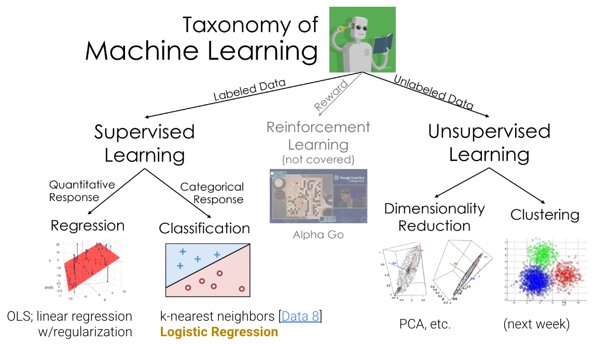
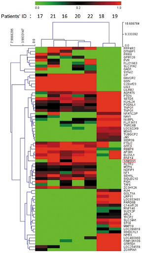
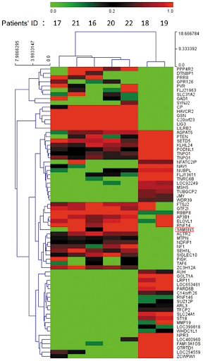
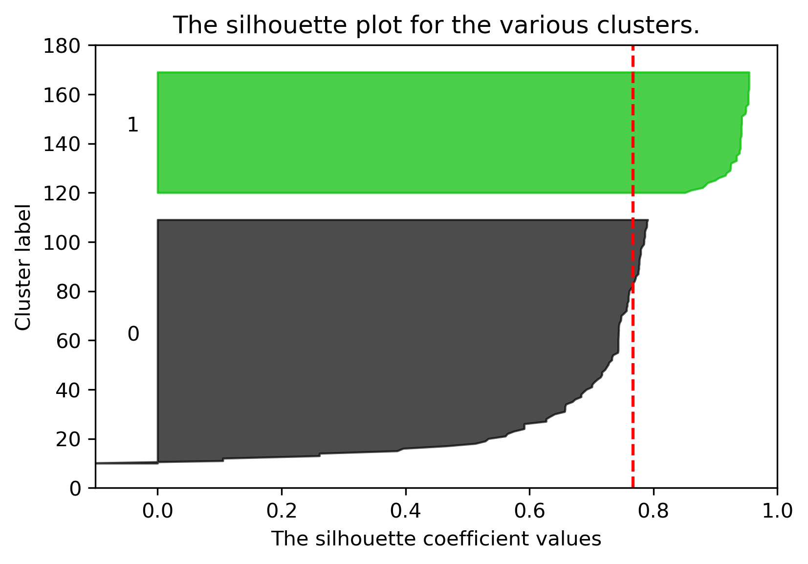
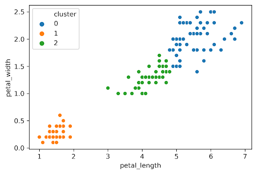
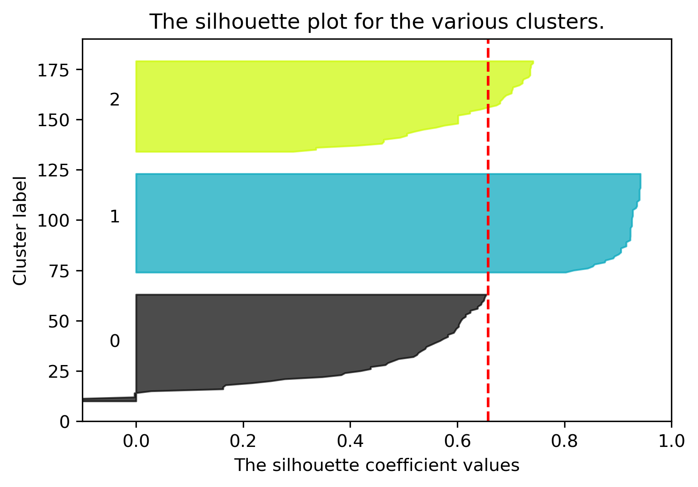

Clustering
Last time, we began our journey into unsupervised learning by discussing Principal Component Analysis (PCA).
In this lecture, we will explore another very popular unsupervised learning concept: clustering. Clustering allows us to “group” similar datapoints together without being given labels of what “class” or where each point explicitly comes from. We will discuss two clustering algorithms: K-Means clustering and hierarchical agglomerative clustering, and we’ll examine the assumptions, strengths, and drawbacks of each one.
Review: Taxonomy of Machine Learning
Supervised Learning
In “Supervised Learning”, our goal is to create a function that maps inputs to outputs. Each model is learned from example input/output pairs (training set), validated using input/output pairs, and eventually tested on more input/output pairs. Each pair consists of:
- Input vector
- Output value (label)
In regression, our output value is quantitative, and in classification, our output value is categorical.

Unsupervised Learning
In unsupervised learning, our goal is to identify patterns in unlabeled data. In this type of learning, we do not have input/output pairs. Sometimes we may have labels but choose to ignore them (e.g. PCA on labeled data). Instead, we are more interested in the inherent structure of the data we have rather than trying to simply predict a label using that structure of data. For example, if we are interested in dimensionality reduction, we can use PCA to reduce our data to a lower dimension.
Now let us consider a new problem: clustering.
Clustering Examples
Example 1
Consider this figure from Fall 2019 Midterm 2. The original dataset was 8 dimensions, but we have used PCA to reduce our data down to 2 dimensions.

Each point represents the 1st and 2nd principal component of how much time patrons spent at 8 different zoo exhibits. Visually and intuitively, we could potentially guess that this data belongs to 3 groups: one for each cluster. The goal of clustering is now to assign each point (in the 2 dimensional PCA representation) to a cluster.
This is an unsupervised task, as:
- We don’t have labels for each visitor.
- We want to infer patterns even without labels.
Example 2: Netflix
Now suppose you’re Netflix and are looking at information on customer viewing habits. Clustering can come in handy here. We can assign each person or show to a “cluster”. (Note: while we don’t know for sure that Netflix actually uses ML clustering to identify these categories, they could in principle.)
Keep in mind that with clustering, we don’t need to define clusters in advance. This marks one of the key differences between clustering and classification, whereas with classification, we have to decide on labels in advance whereas clustering discovers groups automatically.
Example 3: Education
Let’s say we’re working with student-generated materials and pass them into the S-BERT module to extract sentence embeddings. Features from clusters are extracted to:
- Detect anomalies in group activities
- Predict the group’s median quiz grade
Here we can see the outline of the anomaly detection module. It consists of:
- S-BERT feature extraction
- Topic extraction
- Feature extraction
- 16D \(\rightarrow\) 2D PCA dimensionality reduction and 2D \(\rightarrow\) 16D reconstruction
- Anomaly detection based on reconstruction error
Looking more closely at our clustering, we can better understand the different components as represented by centers. Below we have two examples.
Note that the details for this example are not in scope.
Example 4: Reverse Engineering Biology
Now, consider the plot below:
The rows of this plot are conditions (e.g. a row might be: “poured acid on the cells”) and the columns are genes. The green coloration indicates that the gene was “off” (red indicates the gene was “on”). For example, the ~9 genes in the top left corner of the plot were all turned off by the 6 experiments (rows) at the top.
In a clustering lens, we might be interested in clustering similar observations together based on the reactions (on/off) to certain experiments.
For example, here is a look at our data before and after clustering.
Note: apologies if you can’t differentiate red from green by eye! Historical visualizations are not always the best.
Taxonomy of Clustering Approaches
There are many types of clustering algorithms, and they all have strengths, inherent weaknesses, and different use cases. We will first focus on a partitional approach: K-Means clustering.
K-Means Clustering
The most popular clustering approach is K-Means. The algorithm itself entails the following:
Pick an arbitrary \(K\), and randomly place \(K\) “centers”, each a different color.
Repeat until convergence:
- Color points according to the closest center.
- Move the center for each color to the center of points with that color.
Consider the following data with an arbitrary \(K = 2\) and randomly placed “centers” denoted by the different colors (blue, orange):
Now, we will follow the rest of the algorithm. First, let us color each point according to the closest center:
Next, we will move the center for each color to the center of points with that color. Notice how the centers are generally well-centered amongst the data that shares its color.
Assume this process (re-color, re-set centers) repeats for a few more iterations, and we’ve ended up at this state.

After this iteration, the center stays still and does not move at all. Thus, we have converged, and the clustering is complete!
Note
A quick note: K-Means is a totally different algorithm than K-Nearest Neighbors. K-means is used for clustering, where each point is assigned to one of \(K\) clusters. On the other hand, K-Nearest Neighbors is used for classification (or less often, regression), and the predicted value is typically the most common class among the \(K\)-nearest data points in the training set. The names may be similar, but there isn’t really anything in common.
Minimizing Inertia
Consider the following example where \(K = 4\):
Due to the randomness of where the \(K\) centers initialize/start, you will get a different output/clustering every time you run K-Means. Consider three possible K-Means outputs; the algorithm has converged, and the colors denote the final cluster they are clustered as.
Which clustering output is the best? To evaluate different clustering results, we need a loss function.
The two common loss functions are:
- Inertia: Sum of squared distances from each data point to its center.
- Distortion: Weighted sum of squared distances from each data point to its center.

In the example above:
- Calculated inertia: \(0.47^2 + 0.19^2 + 0.34^2 + 0.25^2 + 0.58^2 + 0.36^2 + 0.44^2\)
- Calculated distortion: \(\frac{0.47^2 + 0.19^2 + 0.34^2}{3} + \frac{0.25^2 + 0.58^2 + 0.36^2 + 0.44^2}{4}\)
Switching back to the four-cluster example at the beginning of this section, random.seed(25) had an inertia of 44.96, random.seed(29) had an inertia of 45.95, and random.seed(40) had an inertia of 54.35. It seems that the best clustering output was random.seed(25) with an inertia of 44.96!
It turns out that the function K-Means is trying to minimize is inertia, but often fails to find global optimum. Why does this happen? We can think of K-means as a pair of optimizers that take turns. The first optimizer holds center positions constant and optimizes data colors. The second optimizers holds data colors constant and optimizes center positions. Neither optimizer gets full control!
This is a hard problem: give an algorithm that optimizes inertia FOR A GIVEN \(K\); \(K\) is picked in advance. Your algorithm should return the EXACT best centers and colors, but you don’t need to worry about runtime.
Note: This is a bit of a CS61B/CS70/CS170 problem, so do not worry about completely understanding the tricky predicament we are in too much!
A potential algorithm:
- For all possible \(k^n\) colorings:
- Compute the \(k\) centers for that coloring.
- Compute the inertia for the \(k\) centers.
- If current inertia is better than best known, write down the current centers and coloring and call that the new best known.
No better algorithm has been found for solving the problem of minimizing inertia exactly.
Hierarchical Agglomerative Clustering
Now, let us consider hierarchical agglomerative clustering.
Consider the following results of two K-Means clustering outputs:
Which clustering result do you like better? It seems K-Means likes the one on the right better because it has lower inertia (the sum of squared distances from each data point to its center), but this raises some questions:
- Why is the inertia on the right lower? K-Means optimizes for distance, not “blobbiness”.
- Is clustering on the right “wrong”? Good question!
Now, let us introduce Hierarchical Agglomerative Clustering! We start with every data point in a separate cluster, and we’ll keep merging the most similar pairs of data points/clusters until we have one big cluster left. This is called a bottom-up or agglomerative method.
There are various ways to decide the order of combining clusters called Linkage Criterion:
- Single linkage (similarity of the most similar): the distance between two clusters as the minimum distance between a point in the first cluster and a point in the second.
- Complete linkage (similarity of the least similar): the distance between two clusters as the maximum distance between a point in the first cluster and a point in the second.
- Average linkage: average similarity of pairs of points in clusters.
The linkage criterion decides how we measure the “distance” between two clusters. Regardless of the criterion we choose, the aim is to combine the two clusters that have the minimum value for that choice of criterion. In the case of complete linkage for example, that means picking the two clusters that minimize the maximum distance between a point in the first cluster and a point in the second.
When the algorithm starts, every data point is in its own cluster. In the plot below, there are 12 data points, so the algorithm starts with 12 clusters. As the clustering begins, it begins to assess which clusters are the closest together.

The closest clusters are 10 and 11, so they are merged together.

Next, points 0 and 4 are merged together because they are closest.

At this point, we have 10 clusters: 8 with a single point (clusters 1, 2, 3, 4, 5, 6, 7, 8, and 9) and 2 with 2 points (clusters 0 and 10).
Although clusters 0 and 3 are not the closest, let us consider if we were trying to merge them. A tricky question arises: what is the “distance” between clusters 0 and 3? We can use the Complete-Link approach that uses the max distance among all pairs of points between groups to decide which group has smaller “distance”.

Let us assume the algorithm runs a little longer, and we have reached the following state. Clusters 0 and 7 are up next, but why? The max line between any member of 0 and 6 is longer than the max line between any member of 0 and 7.

Thus, 0 and 7 are merged into 0 as they are closer under the complete linkage criterion.
After more iterations, we finally converge to the plot on the left. There are two clusters (0, 1), and the agglomerative algorithm has converged.
Notice that on the full dataset, our agglomerative clustering algorithm achieves the more “correct” output.
Clustering, Dendrograms, and Intuition
Agglomerative clustering is one form of “hierarchical clustering.” It is interpretable because we can keep track of when two clusters got merged (each cluster is a tree), and we can visualize merging hierarchy, resulting in a “dendrogram.” Won’t discuss this any further for this course, but you might see these in the wild. Here are some examples:
 

Some professors use agglomerative clustering for grading bins; if there is a big gap between two people, draw a grading threshold there. The idea is that grade clustering should be more like the figure below on the left, not the right.
Picking K
The algorithms we’ve discussed require us to pick a \(K\) before we start. But how do we pick \(K\)? Often, the best \(K\) is subjective. For example, consider the state plot below.
How many clusters are there here? For K-Means, one approach to determine this is to plot inertia versus many different \(K\) values. We’d pick the \(K\) in the elbow, where we get diminishing returns afterward. Note that big, complicated data often lacks an elbow, so this method is not foolproof. Here, we would likely select \(K = 2\).
Silhouette Scores
To evaluate how “well-clustered” a specific data point is, we can use the silhouette score, also termed the silhouette width. A high silhouette score indicates that a point is near the other points in its cluster; a low score means that it’s far from the other points in its cluster.
For a data point \(X\), score \(S\) is: \[S =\frac{B - A}{\max(A, B)}\] where \(A\) is the average distance to other points in the cluster, and \(B\) is the average distance to points in the closest cluster.
Consider what the highest possible value of \(S\) is and how that value can occur. The highest possible value of \(S\) is 1, which happens if every point in \(X\)’s cluster is right on top of \(X\); the average distance to other points in \(X\)’s cluster is \(0\), so \(A = 0\). Thus, \(S = \frac{B}{\max(0, B)} = \frac{B}{B} = 1\). Another case where \(S = 1\) could happen is if \(B\) is much greater than \(A\) (we denote this as \(B >> A\)).
Can \(S\) be negative? The answer is yes. If the average distance to X’s clustermates is larger than the distance to the closest cluster, then this is possible. For example, the “low score” point on the right of the image above has \(S = -0.13\).
Silhouette Plot
We can plot the silhouette scores for all of our datapoints. Points with large silhouette widths are deeply embedded in their cluster; the red dotted line shows the average. Below, we plot the silhouette score for our plot with \(K=2\).

Similarly, we can plot the silhouette score for the same dataset but with \(K=3\):
 
The average silhouette score is lower with 3 clusters, so \(K=2\) is a better choice. This aligns with our visual intuition as well.
Picking K: Real World Metrics
Sometimes you can rely on real-world metrics to guide your choice of \(K\). For t-shirts, we can either
- Cluster heights and weights of customers with \(K = 3\) to design Small, Medium, and Large shirts.
- Cluster heights and weights of customers with \(K = 5\) to design XS, S, M, L, and XL shirts.
To pick \(K\), consider projected costs and sales for the 2 different \(K\)s, and pick the one that maximizes profit.
Conclusion
We’ve now discussed a new machine learning goal – clustering – and explored two solutions:
- K-Means Clustering tries to optimize a loss function called inertia (no known algorithm to find the optimal answer in an efficient manner)
- Hierarchical Agglomerative Clustering builds clusters bottom-up by merging clusters “close” to each other, depending on the choice of linkage.
Our version of these algorithms required a hyperparameter \(K\). There are 4 ways to pick \(K\): intuitively, elbow method, silhouette scores, and harnessing real-world metrics.
There are many machine learning problems. Each can be addressed by many different solution techniques. Each has many metrics for evaluating success / loss. Many techniques can be used to solve different problem types. For example, linear models can be used for regression and classification.
We’ve only scratched the surface and haven’t discussed many important ideas, such as neural networks / deep learning. We’ll provide some specific course recommendations on how to further explore these topics in the last lecture.